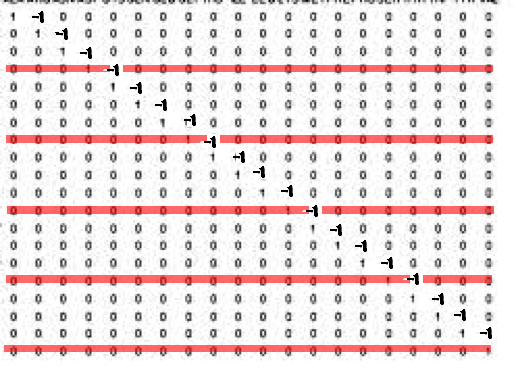

Introduction
Color Transfer is a process that transfers one image's color to another. The method used here is based on Color Transfer between Images[Reinhard et al., 2001]. he algorithm itself is extremely efficient (much faster than histogram based methods), requiring only the mean and standard deviation of pixel intensities for each channel in the L*a*b* color space.
Color Decolorization is a process that transfer a color image to a grayscale image. During the process, color information such as contrast may lost. The algorithm in the project will conserve the information as possible.
Above are the results.
Top Left:transfer from woods to sunset Top right:transfer from sunset to oceanday.
Bottom left:original color image 1 Bottom left:decolorization.
Algorithm Overview
Color Transfer
- 1. Transfer rgb color space to L*a*b
- 2. Calculate Mean and Standard Deviation for each channel of source and target image in Lab- color space
- 3. Transfer back from L*a*b to rgb
Color Space: Lab <-> RGB
I've tried the two methods. The first is RGB to LMS to Lab. It follws the PDF's instruction. However, the result seems not so good:
Contrasted to the built-in method:
What's worse, when transfer storm's color to autumn, the result is vague:
Thus, I used another method to do the transfer. You can find it here. Following the formula there, I eventually succeed in transfer good results, which are just like build-in method's results:
The image looks much better.
Time: for a jpg image, less than 1s when using this method(I only used * for color space transfer).
SOURCE IMAGE TARGET IMAGE RESULT 


Decolorization
METHOD1 : color2gray
- 1. Convert the input image to Lab space
- 2. Compute 𝛿𝑝,𝑞 for each two neighboring pixels
- 3. Constructing matrix A and vectors G and 𝛥
- 4. Solve the objective function to get G
- Evaluation: Color Contrast Preserving Ratio (CCPR)
Compute 𝛿𝑝,𝑞 for each two neighboring pixels
𝛿𝑝,𝑞 is defined as
and I usedimfilterto calculate each channel's difference then calculate the final difference usingarrayfun, which is efficient.Constructing matrix A and vectors G and 𝛥
If 𝛿xy is the original image's difference, and gxy is the grayscale image's difference, then our goal is to minimize the difference between 𝛿xy and gxy:
If we use G to represent the grayscale image's pixels:
Then we will have a equation AG=𝛥, where 𝛥 denotes the differences of color image, and AG denotes the corresponding pixel pair's differences:
𛥠and G is easy to get. How to get A? A is a big matrix of (2mn-m-n)*mn, for the last row and the last column's pixels' differences are 0(They don't have neighbors).So first I made a sparse matrix like(usingspeye):
Then I added another matrix. After that, I removed the last column's pixels' corresponding row:
 It represent the x-difference matrix. Then I did the same thing to the y's matrix.Finally, I used
Notice, I used the row-first order, not the column-first order(So I have to transpose beforecatto concatenate the two matrix.reshape).Solve the objective function to get G
I used bothinv()and "\" to solve the matrix. Interestingly, when I useinv(), matlab automaticly recommand me to use "\".
However, inv() can only be used on squared matrix. To test the performance, I have to cut A's shape, which I needn't do when using "\".
inv()seems less precise and more time-consuming. The time is 1.0s when I use "\"; however, I waited for around 5 mins but it is still computing when usinginv().
Evaluation: Color Contrast Preserving Ratio (CCPR)
CCPR is average 0.617432 using the algorithm. For different 𝜏, the CCPR is as follows:
| 𝜏 | CCPR |
| 1 | 0.965075 |
| 2 | 0.980125 |
| 3 | 0.980329 |
| 4 | 0.979577 |
| 5 | 0.979558 |
| 6 | 0.985383 |
| 7 | 0.990223 |
| 8 | 0.993426 |
| 9 | 0.993338 |
| 10 | 0.993676 |
| 11 | 0.995451 |
| 12 | 0.995514 |
| 13 | 0.995431 |
| 14 | 0.995733 |
| 15 | 0.995528 |
METHOD2 : Contrast Preserving Decolorization
- 1. Convert the input image to Lab space
- 2. Compute 𝛿𝑝,𝑞 for each two neighboring pixels
- 3. Construct parametric model and calculate each param's pixel difference
- 4. Initiate w and calculate β
- 5. Iterativly update w and β
- 6. Use weights to form the grayscale image
In this method, we uses Parametric Color-to-Gray Model, together with Bimodal Contrast-Preserving Objective Function to better calculate each grayscale pixel's value. For details, pleas refer to the article and the following statements.
Construct parametric model and calculate each param's pixel difference
We use {R,G,B,RG,RB,GB,RR,GG,BB} to parameterize the grayscale space. In this way, we can define w{R,G,B,RG,RB,GB,RR,GG,BB} as each param's weight, then we only need to solve nine parameters, rather than image-size-large parameters.So for each grayscale pixel pair, the difference is:
and for clear explaination, please see the images below:Bimodal Contrast-Preserving Objective Function
Weak Color Order
Some color pairs can be clearly ordered in terms of brightness. We say cx ≤cy ⇐⇒ rx ≤ ry & gx ≤ gy & bx ≤ by.
However, other color pairs don't have such strong order. What's more, in different color space, color pairs' order may change. Thus for these pairs, we introduce the weak color order. When use the Gaussian function to solve the problem, we use
to represent the total distance between grayscale and color images. For strong order pairs, we use G(𝛿x,y,σ^2) directly, but for weak order color pairs, we useIteration
To solve the Gaussian function(find the minimum), we transform the function to
and to maximize the energy, we have the derivative . Let's first define Then we'll have a equationThe average time per image is 2.7s.
Those are the results(notice: I used different sigma to generate them):

Original Image Result after 2 iterations Result after 15 iterations 

Original Image Result σ = 5 Result σ = 25 
OTHER ATTEMPTS
I also tried to use {L,a,b,La,Lb,ab,LL,aa,bb} to represent the params, but the result is not good.

Original Image Result using L*a*b* params Result using rgb params
Evaluation: Color Contrast Preserving Ratio (CCPR)
CCPR is average 0.605751 using the algorithm. The CCPR drops may due to the theta value's variance.For different 𝜏, the CCPR is as follows:
| 𝜏 | CCPR |
| 1 | 0.856320 |
| 2 | 0.899983 |
| 3 | 0.918360 |
| 4 | 0.938911 |
| 5 | 0.964578 |
| 6 | 0.984430 |
| 7 | 0.994165 |
| 8 | 0.997349 |
| 9 | 0.998402 |
| 10 | 0.998012 |
| 11 | 0.998050 |
| 12 | 0.997987 |
| 13 | 0.997335 |
| 14 | 0.997255 |
| 15 | 0.996897 |
METHOD3 : Fast Contrast Preserving Decolorization
If we only use {R,G,B} to parameterize the grayscale image, and use search method to find the max value, then the procedure will be faster, while small quality loss can be resonable.
In this way, we needn't to iterate anymore. And for one image, the time is around 0.9s.
Below are the results:
| The second method | The faster method |
| The second method | The faster method |